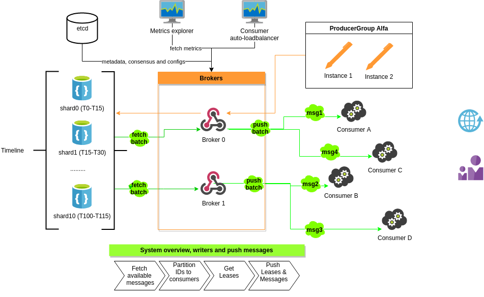

DejaQ
Author: Adrian Bledea-Georgescu
Mainteners: Mihai Oprea, Sandu Samyr David
Contributors: Radu Viorel Cosnita, Diana Maftei, Daniel Coman
Abstract
DejaQ is a distributed messaging queue built for high-throughput persistent messages that have an arbitrary or time-based order. It allows a point-to-point scheduled message-oriented async communication for loosely coupled systems in time and space (reference). Its main use case is to allow consumers to process messages that are produced out of order (the messages are consumed in a different order than they were produced).
Introduction and topics
DejaQ started as a learning project, but we soon realized that to tackle this problem we need more than one weekend. Taking on the challenge, we pursued and tackled each issue we encountered until we found a simple but scalable solution.
We identified a few kinds of message workflows and each of them will be implemented using a different kind of Topic (collection of messages).
- To address the actions based on Timestamps we will build the Timeline topic, that stores the out-of-order produced messages into time-ordered storage, while the consumers “walk” through the timeline as time goes by.
- The second type of out-of-order messages are priority-based messages. Similar to the timeline, producers keep adding messages with different priorities. While the Timeline is dependent on Chronology (time) and in most cases has looser consuming requirements, the PriorityQueue will have a more real-time nature and a smaller cardinality of timeline values (eg: 100 distinct priorities compared to trillions of milliseconds of a timeline).
- The last type of messages DejaQ will address is the time-recurrent messages. CronMessages topic will be used as a cronjob managed system, but having all the DejaQ characteristics: consistency, accuracy, scalability, and reliability.
Premises
We started the project based on the following assumptions about the users of DejaQ and their needs:
- Messages have to be processed in a specific order (NOT in the order they were created)
- The time-sensitive messages should only be processed once(as in by only one service, so instead of supporting a complex publish-subscribe system, we chose a simpler point-to-point architecture).
- The most important aspect of time-actions is accuracy
- Consumers are decoupled from producers in Time and Space
- You have one or more Producers and only 1 group of consumers
- Messages are consumed async and have a lifespan of at least a few seconds
- Payloads are immutable (but the metadata can be modified, eg: its position in the queue/timeline)
If your app needs a Pub/Sub messaging queue, CommitLog, Stream processing or an Event Sourcing type of messaging DejaQ is not the best solution for you.
DejaQ can also be used between 2 other messaging queues (eg: 2 kafka topics) to act as a reorder buffer, based on their priorities, or release the messages at a specific time.
Design principles
- Consistency: although it conflicts with the performance and accuracy, we have to do atomic and persistent write operations (ACID) that leads to “Strong-consistency” at the storage level and stale data detection at the broker and SDK level. Scheduled messages are usually one time transactions and we have to make sure there are no duplicates, misses or lost data. DejaQ is a C (in CAP). This choice will harm the High-Availability and write-performance of the system.
- Accuracy: (precision on the timeline) we strive to deliver the message to a consumer at the exact Timestamp the producer stated. (hopefully at a ms delay, but never before)
- Scalability: all layers will scale horizontally: producers, storage, brokers and consumers.
- Reliability: the brokers especially have to withstand and be available for as long as they could. Partial degradation will be applied to more levels. This leads to a mandatory high quality of the system, from design to recovery scenarios and failovers.
- Delivery guarantees: although not in the first 3 priorities, the system chooses at-least-once-delivery, and strives to deliver only-once. As in all systems, this is a shared responsibility with the user.
More details on the principles DejaQ will be available in the System design documents.
The Timeline
The only topic that will be implemented in the first stable version of DejaQ is the Timeline. The rest of the documentation and efforts will be referring to DejaQ and Timeline as a whole, but we will keep in mind to separate the concerns to allow the next types of topics implementations.
The main use case is the need for generating time-based events like push notifications, marketing campaigns, and re-engagement messages.
Most of the time, this scenario was solved with a good-enough solution, most likely a simple cronjob that triggers a time-window algorithm, eg: every 10 minutes process the messages with the timestamp in the span of the last 10 minutes (or from the last run).
We consider that it is better to move the “load” at the produce time, and insert the message on a mutable Timeline. There are more advantages to doing so, but the main one is that Consumers will have a predictable load and latency, allowing the system overall to scale if needed.
The messages are spread over a timeline based on their timestamps. Producers choose the initial position of the message on the timeline (in the future) and will have the absolute right on the messagethey generate for its entire lifespan (move, delete). (the payload is immutable but the metadata is not).
The broker will push all the available messages (that have the timestamp property in the past<= NOW) to a free and healthy consumer. The broker has the shared responsibility with the SDK to deliver the messages to a consumer at the exact Timestamp (or after, hopefully with a minimum single ms digit latency), but never before.
To achieve the delivery guarantee we are building a Lease (lock) system, that is “naturally” achieved using the fact that only the “past” messages are available to process, so a lease will move the message in the future, achieving a Timeout and a Lease at the same time.
The broker will also create a lease (with a timeout) on behalf of the consumer and send it. This way the full ownership is transferred to the consumer, it has the right to extend the lease or delete the entire message (usually after the processing is done).
Limits & Scope
Because of the mutable nature of the timeline (topic), the topic cannot be replayed (the messages keep moving on the timeline and get deleted, no replayability).
The ordering of the messages is limited to a millisecond granularity, meaning that the order for multiple messages with the same timestamp cannot be guaranteed.
Choosing consistency, the Broker has to ensure that the messages are saved in the storage, sacrificingperformance and throughput to durability.
Even if the Timeline itself is mutable (messages can be inserted, moved and deleted), the message itself is immutable and its payload can have an arbitrary size.
Time drifts(the time difference between the machines involved)will be a major concern for DejaQ. We do not want to fix them but we will alert the users when discovered them and partially degrade when possible. If they occur (more likely when), it will affect DejaQ guarantees.
Although we avoided having a single point of failures and “masters” by design, to achieve some of the principles we need a consensusbetween brokers. As it is out of the scope of the system to deal with it, we will be using a battle-tested storage, more exactly etcd.io.
Our final goal is to build a custom storage, that will allow us to achieve the maximum performance. But for now, we scoped out this challenge as it exceeds our available resources.
Keeping this in mind, we will support multiple external clusters of storage out of the box, for now, we consider maintaining official SDKs for:
- In-memory - to test or achieve maximum performance by losing persistence
- Redis - to serve non-persistent but high-volume topics
- SQL - to serve smaller, persistent needs
- CockroachDB
- Cassandra
We will strive to integrate the consensus and storage layers inside the broker and have a single-binary and cluster to operate, but until then we want to prove the idea and build an MVP that will require:
- DejaQ clusters of brokers
- Etcd cluster for consensus
- Storage cluster
System architecture

There are 5 main actors in the system:
- The user - that uses an SDK, or the broker directly, contains your business logic
- The broker (the main element of the system)
- The client-broker clients, (SDK) helper functions and instances to call the broker
- The storage (hidden for the user)
- Synchronization service (naming, sync, configuration)
In one network it is recommended to have only 1 DejaQ Cluster. A cluster must have:
- only 1 storage
- 1 cluster of Synchronization service (etcd, eg: 3 instances)
- At least 1 broker
A cluster may have any number of clients connected to brokers and any number of topics.
All brokers are equal and serve the same roles. Any producer and consumer may connect to any of them, to use any topic.
The broker will have a consensus to know which consumers are where and will try to distribute the messages between them, in a round-robin fashion(between the active consumers). This way DejaQ achieves horizontal dynamic scalability, to add a new “partition” the user just needs to add a new consumer and the brokers will rebalance the load automatically.
We learned from other messaging brokers limitations and we will cover the following issues:
- HotLoad - DejaQ will handle hot-time frames on the timeline, applying a shard-clone technique (TODO search for its official name), this way the performance will not downgrade when specific timestamps have a larger load than the average (eg: holidays generate huge spikes). The broker will provide metrics for the consumers so they can react to near-future spikes (preventive rebalancing)
- Rebalancing/Static partitioning - brokers will self-balance the load between the current active and healthy consumers, there is no need to move data or change the system
- Payload limitations - usually when large messages are found, other messaging queues’ performance degrades. To tackle this issue from design, we will store the payload in a different location. This will allow the timeline mutation operations performance to be independent of the size of the messages.
Implementation
We are confident that Go is a good solution to this problem. The broker, tests and the first official SDK will be written in Go. Later on, we will have official support for Java and Python clients, with the help of the community.
The first version will contain only the Timeline implementation and a minimal broker.
Broker-SDK protocol will be binary, but instead of building a custom implementation we will use a battle-tested combination, more exactly FlatBuffers on gRPC.io. FlatBuffers is similar to Protocol Buffers but it allows zero-memory decoding of the messages, resulting in a better performance. Already available features of the gRPC framework like multiplexing and streaming will allow us to build a more robust product and focus more on our logic and less on plumbing.
Observability is another important aspect of DejaQ, the SDK will be as transparent as it can be, and the Broker will expose all its inner metrics in a Prometheus-compatible format.
Conclusion
We are embarking on a long and harsh journey. If you love technical challenges and distributed systems please join us! We are looking for help at all chapters, from owners to testers, from infrastructure to users that need this kind of product. Contact us: https://github.com/chronoteam or adrian@coder.today